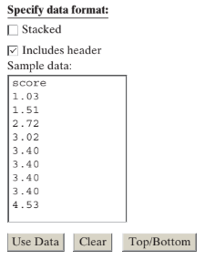

3-3 : Theory-based Inference for a Population Mean
MAT 2100: Introduction to Statistics
Grace College
Last updated September 24, 2024
The Jesus Creed
Hear, O Israel: The Lord our God, the Lord is one.
Love the Lord your God with all your heart and with all
your soul and with all your mind and with all your strength.
The second is this: Love your neighbor as yourself.
STEP 1: Ask a research question.
How much do students at your school sleep on a typical night? Let’s make the question more specific and ask about last night. Is the average less than the recommended eight hours? How can we estimate this population average?
Exercise 1
Based on these questions, what is the population of interest? What is the parameter? What symbol do we use for this parameter?
STEP 2: Design a study and collect data.
Let’s investigate whether the mean amount of sleep last night for the population of all students at your school was less than 8 hours.
Exercise 2
Express the null and alternative hypotheses for investigating this question.
To test these hypotheses we need to collect data.
Exercise 3
Ideally, how should you obtain a sample from the population of all students at your school?
Exercise 4
What variable would you measure on each student?
Whereas obtaining a simple random sample of students from your school is an ideal way to attempt to get a representative sample, there is no question that it would take a fair bit of work to make that happen. So much so, that we might not want to do the study anymore! This happens frequently in Statistics, and so researchers often opt to use a convenience sample instead. One choice of a convenience sample of students at your school is to use your class.
Exercise 5
Identify at least one reason that your class is likely a good representation of all students at your school in terms of hours slept last night.
Exercise 6
Identify at least one reason that your class is likely not a good representation of all students at your school in terms of hours slept last night.
Exercise 7
Recall that convenience sampling may be ____ (biased/ unbiased) whereas simple random sampling is ____ (biased/unbiased).
We will revisit the implications of using your class as a sample of students from your college later when we evaluate the study. For now, let’s gather the data.
Exercise 8
How much sleep (to the nearest quarter hour) did you get last night? Combine your answer with those of your classmates.
Exercise 9
Did you report a number of hours or a number of minutes slept?
Remark 1:
Key Idea .
When describing a quantitative variable, you should always be aware of the measurement units of the variable. Measurement units indicate information about the context and scaling of the variable (e.g., hours vs. days). Always include measurement units when describing your variable.
STEP 3: Explore the data.
After you collect data, the next step is to explore the data. In the case of a quantitative variable (like we have here), exploring the data is a bit more involved than earlier. Recall from the Preliminaries that we can summarize a quantitative variable using a dotplot and then describe the shape, center, variability, and unusual observations.
Use the Descriptive Statistics applet to examine a dotplot of the sample data. To do this, press Clear to delete the existing data in the applet and then copy and paste your class data (with a one-word variable name) into the Sample data box and press Use Data.

Exercise 10
Summarize the shape, center (mean with appropriate symbol and measurement units), and variability (standard deviation with appropriate symbol and measurement units) for the sample of sleep times for your class. Also be sure to discuss any unusual observations or outliers in the data.
Exercise 11
Do these data provide any preliminary evidence that students at your school tend to sleep less than 8 hours a night?
STEP 4: Draw inference beyond the data.
Let’s now explore what the distribution of this sample tells us about the strength of evidence against the null hypothesis.
Exercise 12
Suppose we had taken many, many samples of the same size from the population at your school. If the null hypothesis is true, how do you predict the distribution of sample means will behave? Be sure to discuss any information you do not know.
Simulation-based Approach: Applying the 3S Strategy to Hypotheses about a Population Mean
To evaluate the strength of evidence that your sample data provide against the null hypothesis we need to investigate how often a sample mean as small as the one observed in your sample would occur if you were selecting a random sample from a population in which the mean sleep time really is 8 hours (null hypothesis). In essence, we will apply the 3S strategy as we have done before. A previous section showed that the sample mean should fall within two standard deviations \(\dfrac{2\sigma}{\sqrt{n}}\) of the population mean. Let’s now look at using the sample standard deviation(s) instead of \(\sigma\text{.}\)
Exercise 13
Calculate and interpret the equation for the standard deviation.
Exercise 14
Based on your answer to #13, does it seem surprising to get a sample mean like the one in your class survey if the population mean is 8? Justify your answer.
Remark 2:
Key Idea .
We can calculate a standardized statistic based on the observed sample data by computing
(where \(\mu_0\) is a symbol used to represent the hypothesized value of the population mean).
Now let’s explore whether "2" is still a reasonable cut-off for declaring this standardized statistic to be large.
Let’s Investigate
Open the One Mean applet. Notice that "1" has been selected (this is the first of three hypothetical populations of sleep times pre-loaded into the applet) and a histogram displays this population distribution. For now we are assuming that the population distribution is normally distributed with mean very close to 8 hours and standard deviation about 1.5 hours.
Check the Show Sampling Options box. Set the Number of samples to 10000 and set the Sample size to match your class survey. Press Draw Samples.
Exercise 15
Is the distribution of sample means centered around 8? Is the distribution approximately normal? (Why?) Is the standard deviation close to \(\sigma/\sqrt{n}\text{?}\) (Show calculation details.)
The histogram should behave as expected, but this is the distribution of sample means. What we are interested in now is the distribution of standardized statistics.
Above the distribution of sample means, select the radio button for t-statistic—the name for the standardized statistic we are using here—because if you now check the Overlay t Distribution box, you should see that these t-statistics are well modeled by something called the t-distribution.
The shape of a t-distribution is still mound-shaped, but it is centered at zero. It looks a lot like a normal distribution, but it is a bit more spread out than a normal distribution (more observations in the "tails," fewer in the middle). These "heavier tails" are beneficial for us here, where we have sample to sample variation in the means plus additional uncertainty by using the sample standard deviation each time rather than one population standard deviation. For this reason, the theory-based p-value will be based on the t-distribution rather than a normal distribution. But if you instead check the Overlay Normal Distribution box, there is not much difference in the two distributions. In general, when the sample size is large (e.g., more than 20), there is not a very large difference between the two distributions.
Exercise 16
Use the applet, the t-statistic you calculated for your class survey, and the Count Samples box to estimate a p-value using the t-distribution (in the direction of the alternative hypothesis).
Exercise 17
Based on this p-value do your sample data provide strong evidence that the population mean sleep time at your school last night was less than 8 hours? Justify your answer, as if to a friend who has not studied statistics.
STEP 5: Formulate conclusions.
Exercise 18
Think again about how the sample was selected from the population. Do you feel comfortable generalizing the results of your analysis to the population of all students at your school? Explain.
Exercise 19
Looking back: Did anything about the design and conclusions of this study concern you? Issues you may want to critique include: the match between the research question and the study design, how the observational units were selected, how the measurements were recorded, and whether what we observed is of practical value.
Exercise 20
Looking ahead: What should the researchers’ next steps be to fix the limitations or build on this knowledge?
Exploring Further
Exercise 21
Suppose you rejected the null hypothesis in this study, does that mean you have proven that the population mean is not equal to 8 hours? If not, why not. (Hint: How does this relate to your p-value?)
Exercise 22
Suppose we do not reject the null hypothesis that \(\mu = 7\) hours. Does this mean you have proven that \(\mu = 7\) hours? If not, why not?